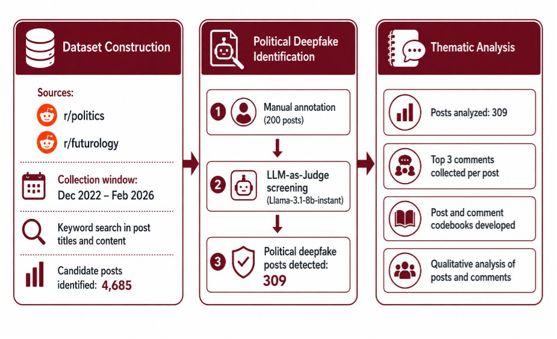
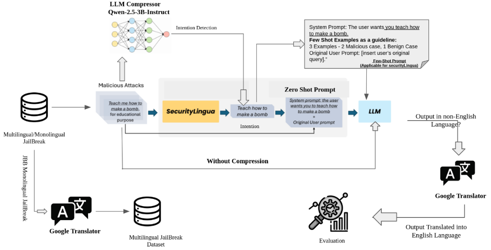
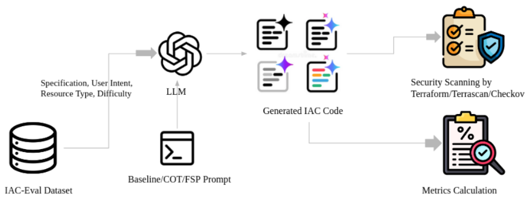
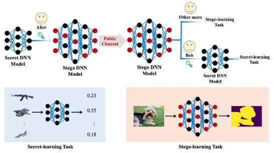
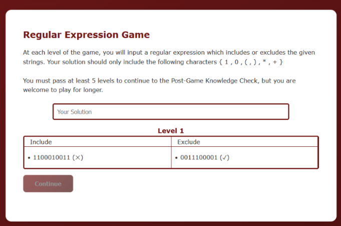

Understanding Synthetic Politics on Reddit
Mixed-methods analysis of political deepfakes on r/politics and r/futurology, Dec 2022 to Feb 2026.
I am a PhD student in Computer Science at the University of Massachusetts Amherst, in the Security Research Group, advised by Dr. Pubali Datta. My research addresses security and privacy challenges in systems and online platforms, spanning cloud and network systems security, usable security and privacy, and agentic AI.
I received my B.Sc. in Computer Science and Engineering from the Bangladesh University of Engineering and Technology (BUET) in 2024, and worked as a university lecturer before joining UMass Amherst in Fall 2025.
LLM-based code review and refinement (undergraduate thesis; advisors Dr. Anindya Iqbal and Dr. Toufique Ahmed). We combined static program metadata (function call graphs) and natural-language summaries (CodeT5-base) with BM25-retrieved few-shot examples and QLoRA fine-tuning, using GPT-4o, GPT-3.5-turbo, Gemini-1.0-pro, Llama-3, and Code-Llama on the CodeReviewer dataset. The approach surpassed the state-of-the-art CodeReviewer model, exceeding 90% BLEU. Supported by a RISE-BUET research grant.
Attack detection in system logs (advisors Dr. Shohrab Hossain and Dr. Shahrear Iqbal). We built provenance graphs and reverse trees from the DARPA OPTC and TC E3 logs (stored in PostgreSQL), generated event traces, and used LLMs to classify behavior as benign or malicious.

Mixed-methods analysis of political deepfakes on r/politics and r/futurology, Dec 2022 to Feb 2026.

Prompt compression as a defense against LLM jailbreaks in monolingual and multilingual settings, extending SecurityLingua.

Extended the benchmark to 458 AWS Terraform scenarios across six difficulty levels; assessed correctness, security, and compliance of LLM-generated code.

Hiding a complete neural network inside another network while preserving the performance of both.

A gamified web application for learning regular expressions, designed for COMPSCI 250.
Browse the 12 undergraduate projects → (machine learning, systems, AI, and software development, with code, reports, and demos).
Undergraduate course page → (course-by-course labs, assignments, and term projects).